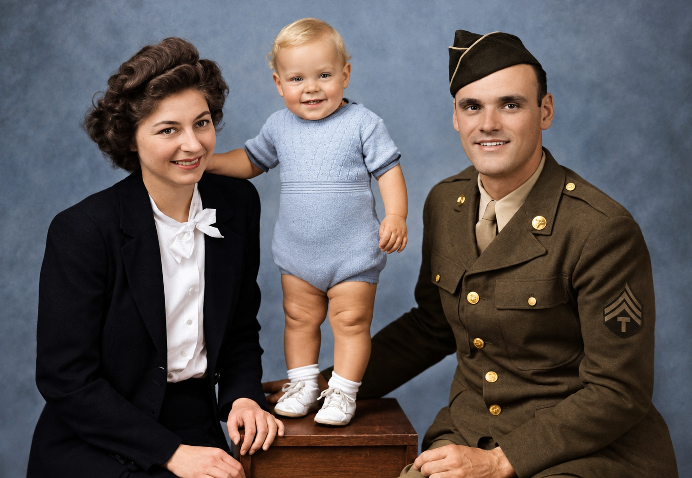
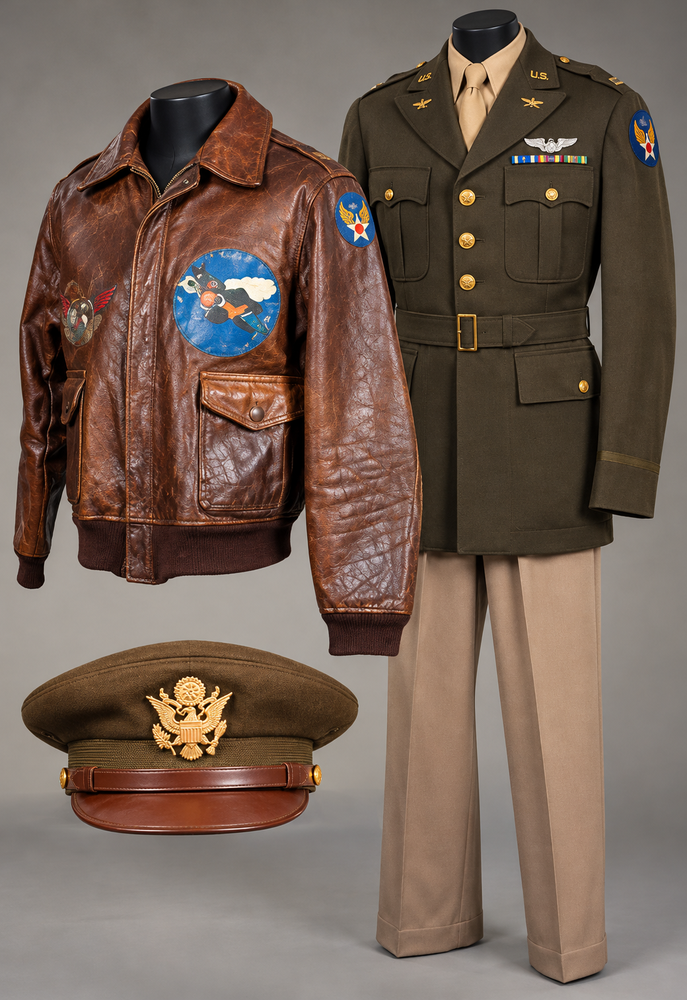
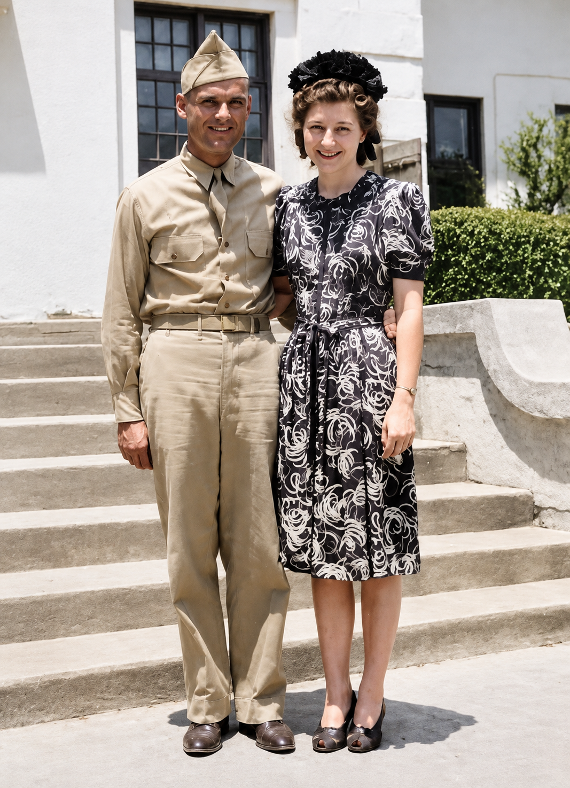

Ancestral Beginnings
Adolph Lindberg (Västra Götaland) and Ida Erickson (Dalsland) are born in Sweden; both later emigrate to Colorado.
Birth of Edward
Edward G. Lindberg is born in Greeley, Colorado, the youngest of the family.

A Life Transformed
At nineteen, Edward answers an altar call and gives his life to Jesus Christ.
Anderson Bible College
Edward and Edith Underwood begin at Anderson Bible College, Indiana.


Joined in Holy Matrimony
Edward and Edith are married at the Church of God in Denver.
Pearl Harbor
Pearl Harbor is attacked. The United States enters World War II, changing millions of lives forever.


Birth of Gene Elton
Their son, Gene Elton Lindberg, is born.
Medic Training & Trial
Conscientious objector status granted; medic training; blackout accident in New York City; months of recovery.

Hot Springs, Arkansas
Edward and Edith photographed together in Hot Springs, Arkansas during military duty.
Deployment Abroad
Reassigned to the Ninth Air Force; promoted to sergeant; sails on the Queen Mary to England.

The Aßling Train Wreck
The Aßling train wreck, Germany — the catastrophic night of rescue, trauma, and grace that this book is about.
A Legacy of Faith
Edward G. Lindberg dies in Santa Fe, New Mexico, still reading the same King James Bible.